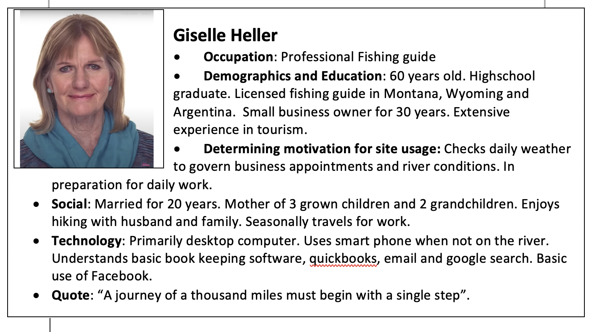
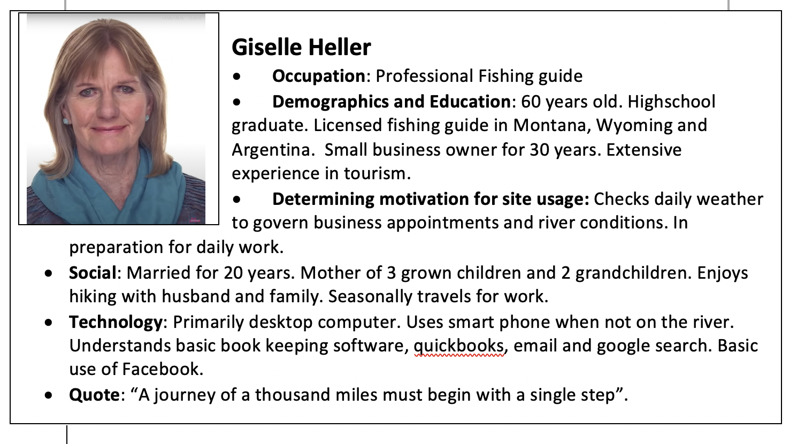

The target demographic can be described as such:
-
Who:
General Public, Active Outdoor Enthusiast,
Commuters, Construction crews and outdoor tourism related
professionals.
-
Age:
8-80
-
Technolongy
General accessibility. Primarily phone,
tablet and desktop
-
Technology
General accessibility. Primarily phone, tablet and desktop implementation.
-
Income
Large range in annual income. $30,000 and above.
-
Motivation
To prepare for various activities outside.
Personas
 

Senarios
- 1. Why is having access to accurate weather important?
- 2. When do you need access to weather?
- 3. How does knowing the weather conditions affect you day?
- 4. What do you look for when exploring the weather forecast?
- 5. Looking for information on upcoming emergency weather